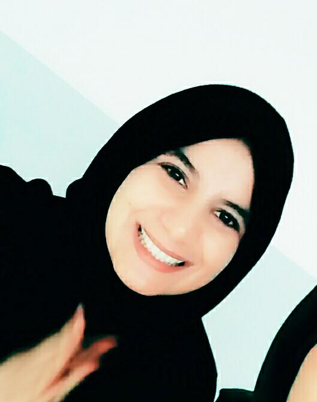

Kraiem Oumaima
" Don't wait for a great life to be grateful. Be greatful and you'll have a great life ".
Mon expérience
- 2016-2015 : Lycée secondaire Khniss
Bac Math
Réussir mon Bac avec mention bien
- 2018-2017: Institut préparatoire aux étude d’ingenieur de Monestir
1ére année math physique
2 éme année math physique
Réussir au concours national déentrée aux écoles d ’ingenieur.
- De 2019-2018 : Ecole Nationale d’Ingénieurs de Tunis
1ére année Informatique
Réussir un mini projet C: jeu Sudoku.
Réussir un mini projet C++: Robot Traider,
Réussir mon PFA1: La sécurité dans le Cloud Computing
Mes compétences
- Rédaction de business plan, et recherches de marchés
- Agent de renseignement, exflitration de civil en zone de guerre
- Polyglotte
- Leadership
Ma formation
- Institut préparatoire aux étude d’ingenieur de Monestir
Formation Python et SQL.
- Ecole Nationale d’Ingénieurs de Tunis
Formation réseau : Introduction
Formation Cloud Compution Amazon
Formation HTML et CSS
- INJAZ Tunisia
Participation au compétition Company Program:
Projet: MyAdvizor
Post : Chef Marketing
{kind=link}